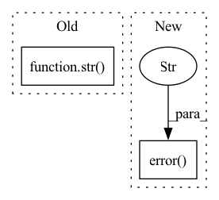

Pattern ID :25207
Before Change
else:
logger.info("Resume NOT Successful")
logger.info("Last Chunk Line: " + str(line_chunk))
logger.info("Previous (to resume line) Source Line: " + str( preprocessed_line) )
logger.info(
(
"Common causes of this issue:\n"After Change
try:
chunk_json, _ = load_json(chunk_file_path)
except FileNotFoundError:
logger.error(
"The file at path %s was not found. Make sure `--compression` is set correctly." ,
chunk_file_path,
)
last_item_chunk = chunk_json[-1]
line_chunk = last_item_chunk["src"]
// remove the last item if it is a newlineIn pattern: SUPERPATTERN
Frequency: 3
Non-data size: 2
Instances Fragment ID: 77115641
Project Name: hhousen/transformersum
Commit Name: 282af37b2c0a95ed14e349bfb03787c9bd442ff0
Time: 2020-07-15
Author: hayden@haydenhousen.com
File Name: src/convert_to_extractive.py
M Class Name: AnonimousClass
N Class Name: AnonimousClass
M Method Name: check_resume_success(6)
N Method Name: check_resume_success(6)
M Parent Class:
N Parent Class:
M File Name: src/convert_to_extractive.py
N File Name: src/convert_to_extractive.py
M Start Line: 304
M End Line: 334
N Start Line: 304
N End Line: 333
Before Change
a = _read_awkd(filepath, branches, load_range=load_range)
except Exception as e:
a = None
_logger.error("[fileio._read_files]" + str( e) )
if a is not None:
for name in branches:
table[name].append(a[name].astype("float32"))After Change
a = _read_awkd(filepath, branches, load_range=load_range)
except Exception as e:
a = None
_logger.error("When reading file %s:" , filepath)
_logger.error(traceback.format_exc())
if a is not None:
for name in branches:
table[name].append(a[name].astype("float32")) Fragment ID: 77115644
Project Name: hqucms/weaver
Commit Name: aeef300f1ccf95679ad7a2477e81362fec93d162
Time: 2020-06-13
Author: huilin.qu@cern.ch
File Name: utils/data/fileio.py
M Class Name: AnonimousClass
N Class Name: AnonimousClass
M Method Name: _read_files(4)
N Method Name: _read_files(4)
M Parent Class:
N Parent Class:
M File Name: utils/data/fileio.py
N File Name: utils/data/fileio.py
M Start Line: 67
M End Line: 67
N Start Line: 71
N End Line: 72
Before Change
with ScopedConfigure(None, None):
info("^^^ should see b = 33.3")
with ScopedConfigure(str( tmp_path / "test-logger") , ["json"]):
record("b", -2.5)
dump()
After Change
logger.record("a", "longasslongasslongasslongasslongasslongassvalue")
logger.dump()
logger.warn("hey")
logger.error("oh" )
@pytest.mark.parametrize("_format", ["stdout", "log", "json", "csv", "tensorboard"])
def test_make_output(tmp_path, read_log, _format): Fragment ID: 77115645
Project Name: dlr-rm/stable-baselines3
Commit Name: b52c6fc18fa4b48a259c839e8159b6c9f826e8ad
Time: 2021-06-14
Author: antonin.raffin@ensta.org
File Name: tests/test_logger.py
M Class Name: AnonimousClass
N Class Name: AnonimousClass
M Method Name: test_main(1)
N Method Name: test_main(1)
M Parent Class:
N Parent Class:
M File Name: tests/test_logger.py
N File Name: tests/test_logger.py
M Start Line: 110
M End Line: 145
N Start Line: 146
N End Line: 173